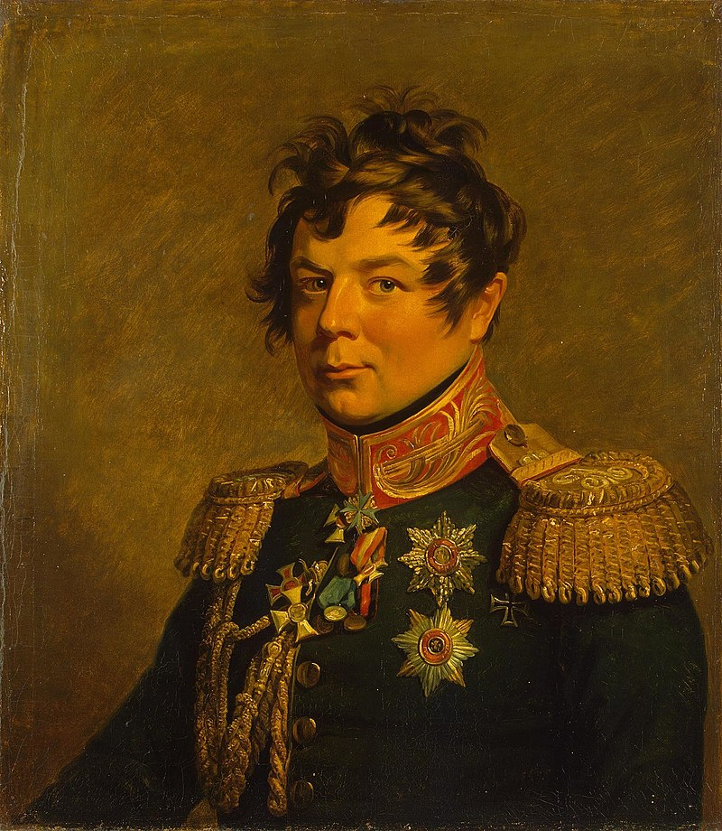
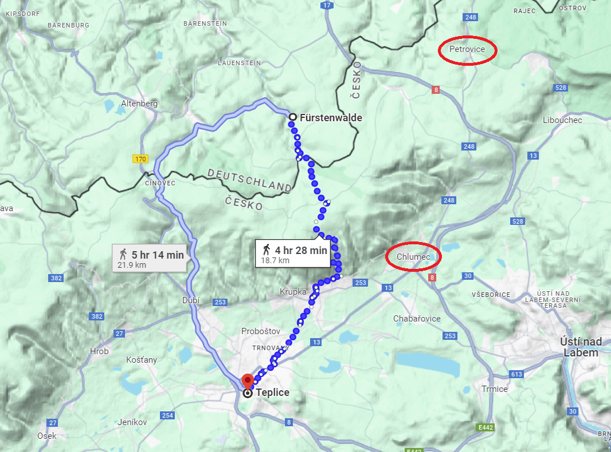
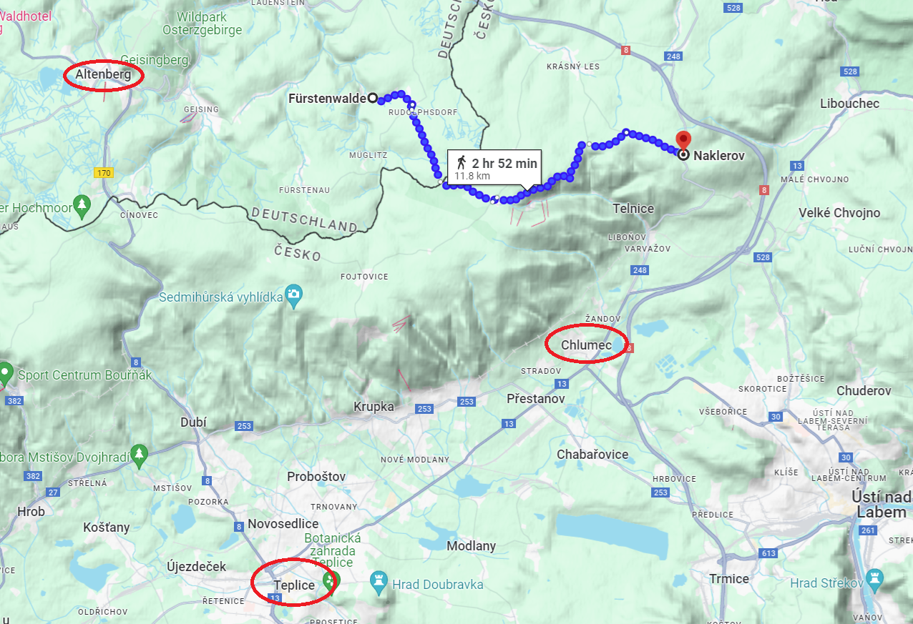
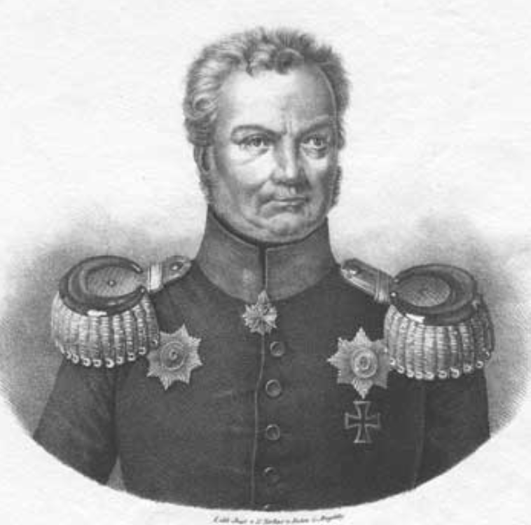

쿨름 전투 (5) - 산 속에서는 모두가 혼란하다
게시: 2024-06-03T06:30:46+09:00
적군이 계속 증강되는 가운데, 후발대로 따라오고 있다고 생각한 나폴레옹의 본대로부터 소식이 없자 아마 방담도 슬슬 속이 타들어가기 시작했던 것 같습니다. 8월 30일 오전 6시 30분 경에 나폴레옹에게 보낸 방담의 보고서는 다소 횡설수설하는 내용이었는데, 그의 초조함을 그대로 보여주는 것이었습니다. "적군은 테플리츠로 가는 길을 결연한 의지로 방어하고 있습니다. 밤 사이에 적의 병력은 증원되었습니다. 저는 그저 현 위치를 지키고 폐하의 명령을 기다릴 뿐입니다. 저는 병력을 집중시켜 폐하의 명령을 수행하려 했으나, 아직 저의 예비 포병대가 도착하지 않았으며 탄약도 거의 떨어졌습니다. 제23사단을 따라가버린 제 기마포병대도 아직 돌아오지 않았습니다. 식량도 없습니다. 적군이 (마을들의) 모든 것을 불태웠습니다." 이 짧은 보고서를 더 짧게 요약하면 '빨리 와서 도와주세요' 정도가 되겠습니다. 그렇게 초조해하는 방담을 둘러싼 연합군은 회심의 미소를 지으며 포위망을 좁히고 있었을까요? 꼭 그렇지는 않았습니다. 연합군도 속이 타기는 마찬가지였습니다. 애초에 얼츠비어거 산맥에는 대규모 병력이 이동할 통로가 거의 없다는 가정하에 드레스덴 방어전을 기획했던 나폴레옹이 알고 있던 것과는 달리, 이 산맥에 생각보다 산길이 많다는 것은 프랑스군에게 결코 유리한 일은 아니었습니다. 그러나 그게 꼭 연합군에게도 유리하게만 작용하는 것은 아닐 수 있었습니다. 당시 연합군은 뿔뿔이 흩어져 여러 산길을 통해 보헤미아 테플리츠로 향하고 있는 상태였습니다. 드레스덴으로 쳐들어갈 때와는 달리 페터스발트를 통해 우르르 이동하지 않고 이렇게 분산 이동했던 것은 연합군으로서도 어쩔 수 없는 선택이었습니다. 페터스발트 고갯길은 비교적 넓은 길이라는 장점이 있긴 했지만, 이렇게 하나의 경로를 통해 진격하다보니 부대 이동에 정체가 발생하여 결국 드레스덴 앞에 신속한 병력 집결이 어려웠고, 그것이 사실상 패전으로 이어졌습니다. 이번에는 뒤에서 나폴레옹이 추격해오는 상황인지라, 그렇게 페터스발트 하나의 경로로 이동할 생각을 못하고 뿔뿔히 흩어진 상태로 험한 샛길을 통해서라도 허겁지겁 후퇴하고 있었던 것입니다. 문제는 그렇게 험한 산맥 속에서 병력이 분산된 것이 결코 바람직한 상황이 아니라는 것이었습니다. 아무리 보헤미아 방면군이 아직 15만이 넘는 대군이라고 해도, 이렇게 분산된 상태면 어느 험한 계곡에서 부대별로 각개격파 당하더라도, 서로의 사정을 알 수도 없고 도울 수도 없는 상황이 되어버릴 수 있기 때문이었습니다. 실제로도 그랬습니다. 그런데, 분명히 8월 29일 오후 5시의 공격에서, 러시아 근위기병대를 비롯한 추가적인 러시아군 부대들이 용케도 쿨름 전투 현장을 잘 찾아왔쟎습니까? 이건 어떻게 된 것일까요? 별다른 통제를 받지 않고도 각 일선 부대 지휘관의 판단에 따라 은은히 들려오는 포성 방향으로 알아서 찾아온 부대들도 있었지만 모두가 다 그런 것은 아니었습니다. 가령 러시아 근위기병대는 두 명의 현지 목동들의 안내를 받아가며 테플리츠로 가는 지름길을 따라 산길을 걷고 있었습니다. 이들이 쿨름 전투 현장에 나타난 것은 디빗취(Ivan Ivanovich Diebitsch) 장군이 도중에 나타나 쿨름에서 전투가 벌어졌으니 그 쪽으로 쾌속 이동하라고 지시했기 때문이었습니다. 전해지는 바에 따르면 좁은 산길에서 디빗취 장군과 마주친 근위기병대의 선두 병사들은 이렇게 다짜고짜 명령을 내리는 이 젊은 장교가 누군지 알지 못해 명령에 응하지 않았다고 합니다. 산길에 길게 늘어진 근위기병대의 대열 속에서 자신의 얼굴을 아는 고위 장교를 찾아내기가 쉽지 않다고 생각한 디빗취는 입고 있던 외투를 벗어 훈장이 주렁주렁 달린 화려한 군복을 보여주었고, 그러자 러시아 병사들은 두말하지 않고 명령에 따랐다고 합니다.

(희한한 헤어스타일을 하고 있는 디빗취입니다. 그는 당시 불과 28세의 젊은 나이였는데, 태생은 프로이센 영토인 하(下)슐레지엔이었고 교육은 베를린의 사관학교에서 받았으며, 아버지가 프리드리히 대왕의 참모로 복무했던 귀족이었습니다. 그러나 서방의 인재를 모집하던 러시아군으로 이적했던 그의 아버지의 권고에 따라, 그도 사관학교를 마치자마자 16살의 나이에 러시아군에 입대했고 이후 계속 러시아군으로 경력을 쌓았습니다. 그래서 아우스테를리츠와 아일라우, 프리틀란트 등의 전투에 모두 참전한 베테랑이었고, 불과 27세의 나이였던 1812년에 소장으로 승진했습니다. 그의 군 경력은 나폴레옹 전쟁이 끝난 뒤에 더욱 빛나 오스만 투르크와의 전쟁에서 결정적인 공을 여러 차례 세웠습니다. 그러나 1831년 폴란드 반란을 진압하다 당시 동유럽을 강타한 콜레라에 걸려 비참한 최후를 맞았습니다.) 그렇다면 디빗취는 또 어떻게 쿨름에서 전투가 벌어진 것을 알았을까요? 여기엔 여태까지 아무 쓸모가 없었던 프로이센 국왕 프리드리히 빌헬름의 공이 컸습니다. 애초에 오스테르만에게 방담을 막도록 부탁한 것도 그였는데, 그는 거기서 그치지 않고 여기저기 러시아군과 프로이센군이 산맥을 넘고 있을 만한 경로로 파발마를 보내 쿨름에서 방담과 오스테르만이 결전을 벌인다는 것을 알렸던 것입니다. 당연히 프리드리히 빌헬름의 파발마들 중 하나는 드레스덴에서 철수해오고 있던 클라이스트(Friedrich von Kleist)의 프로이센군 제2군단에게도 도착했습니다. 원래 8월 29일 오후 4시 경, 클라이스트의 선두 부대는 아직 얼츠비어거 산맥에 접어들기 직전인 퓌르스트발더(Fürstenwalde, 대공의 숲이라는 뜻)에 막 도착한 상태였습니다. 그런 클라이스트를 찾아온 전령은 테플리츠 계곡 입구에서 전투가 벌어지고 있으니 당장 그 쪽으로 달려가라는 프로이센 국왕의 메시지를 전달했습니다. 하지만 클라이스트는 그 명령에 선듯 응하기가 곤란했습니다. 일단 거기까지 강행군으로 달려온 것으로도 병사들이 너무 지쳤고, 이제 산길로 접어들기에는 해가 곧 질 시간이었습니다. 게다가 아직 그의 군단이 다 퓌르스트발더에 집결한 것도 아니었습니다. 또한 그 전령이 보고하길, 여기까지 오느라 거쳐왔던 좁은 산길들은 대개 러시아군 병력과 짐마차 등으로 정체 상태라고 했습니다. 그러니까 당장 얼츠비어거 산맥 속으로 뛰어든다고 해도 러시아군이 일으킨 산속 교통 체증 속으로 한밤중에 뛰어드는 결과를 낳을 뿐이었습니다. 클라이스트는 일단 국왕의 명령을 깔아 뭉개기로 하고는 퓌르스트발더에서 계속 병력 집결을 기다렸습니다.

(원래 클라이스트가 생각했던 테플리츠로 향하는 경로입니다. 방담과 오스테르만이 혈투를 벌이고 있던 쿨름(현재 이름 Chlumec)을 거치지 않습니다.)
몇 시간 뒤, 저녁이 되자 다시 폰 쉘러(von Schöler)라는 국왕의 참모가 나타났습니다. 이번에는 좀더 구체적이고 또 성가신데다 위험하기까지 한 요청서를 들고 왔습니다. 원래 클라이스트가 의도했던 길은 퓌르스트발더에서 약간 남서쪽을 향해 그대로 얼츠비어거 산맥을 넘는 것이었습니다. 그러나 프리드리히 빌헬름의 요청은 거기서 방향을 완전히 남동쪽으로 틀어 놀렌도르프(Nollendorf)로 가라는 것이었습니다. 그렇게 놀렌도르프로 간 뒤에 다시 방향을 남서쪽으로 돌리면 쿨름, 즉 방담의 등 뒤를 들이칠 수 있다는 설명이었습니다. 그건 매우 솔깃한 이야기였습니다. 클라이스트의 참모였던 그롤만(Karl Wilhelm von Grolman) 중령은 그 일대의 지형을 잘 아는 사람이었는데, 그렇게 놀렌도르프로 가는 길은 산속이 아니라 산맥 기슭을 따라 이동하는 길이라서 행군도 비교적 쉬웠고, 무엇보다 그렇게 하면 정말 방담의 군단을 앞뒤에서 포위하는 것이 가능했기 때문이었습니다.

(폰 쉘러가 들고온 요청서의 내용은 바로 저렇게 곧장 산맥을 넘지 말고 먼저 놀렌스도르프 (현재 이름 Naklerov)로 가라는 것이었습니다. 빙 돌아가라는 말이었습니다.)

(나폴레옹보다 8세 연하였던 그롤만은 베를린 출신의 전형적인 프로이센 장교였습니다. 보헤미아 방면군이 편성되어 슐레지엔을 떠나 보헤미아로 갈 때, 그나이제나우에게 '문제거리들이 모두 보헤미아로 가버리니 시원하시겠습니다'라고 농담을 했던 사람이 바로 이 그롤만입니다. 그는 예나-아우어슈테트 패전 이전부터 샤른호스트의 신봉자였고 그를 도와 많은 개혁을 주도했습니다. 1807년 틸지트 조약 체결 이후엔 나폴레옹의 위성국가 신세가 된 프로이센을 버리고 처음에는 오스트리아군으로 이적했다가 나중엔 프랑스군과 싸우기 위해 스페인까지 가서 정말 용감하게 싸웠습니다. 그러다 발렌시아에서 포로가 되어 프랑스로 후송되자 탈출을 감행했고, 스위스를 통해 1813년 프로이센에 복귀했습니다. 그는 1815년 워털루 전투에서도 블뤼허의 참모로 복무하며 결정적인 공로를 세웠습니다.) 다만 이 결정이 쉬운 것은 아니었습니다. 나폴레옹이 사실상 추격을 포기했다는 사실을 모르는 것은 방담뿐만이 아니었습니다. 프리드리히 빌헬름도 물론이고 클라이스트도 그 사실을 모르고 있었고, 지금도 나폴레옹의 본대가 맹추격하고 있다고 생각했습니다. 그리고 방담은 당연히 어디서 교전 중이라고 나폴레옹에게 전령을 보냈을 것이니, 나폴레옹은 바로 쿨름으로 달려오고 있을 것이 뻔했습니다. 그런 상황에서 방담의 뒤통수를 치겠다고 놀렌도르프를 거쳐 쿨름으로 향했다가는, 까딱하면 방담과 나폴레옹 사이에 끼어버려 완전히 포위되는 사태가 벌어질 수도 있었습니다. 그러나 결국 클라이스트는 새벽에 동이 트자마자 놀렌도르프로 달려가기로 합니다. 프리드리히 빌헬름의 요청서를 들고 얼츠비어가 산맥을 돌아다니며 프로이센군과 러시아군을 모으고 있는 전령이 한두 명이 아니었기 때문이었습니다. 이렇게 방담을 노리는 올가미가 속속 엮이고 있는 가운데, 운명의 8월 30일 태양이 떠올랐습니다. Napoleon and the Struggle for Germany, by Leggiere, Michael V With Napoleon's Guns by Colonel Jean-Nicolas-Auguste Noël https://www.pinterest.co.uk/pin/143059725653536439/ https://napoleon-monuments.eu/Napoleon1er/Vandamme.htm https://alchetron.com/Battle-of-Kulm https://en.wikipedia.org/wiki/Battle_of_Kulm https://battlefieldanomalies.com/napoleonic-wars/the-battle-of-kulm/ https://en.wikipedia.org/wiki/Hans_Karl_von_Diebitsch https://en.wikipedia.org/wiki/Karl_von_Grolman